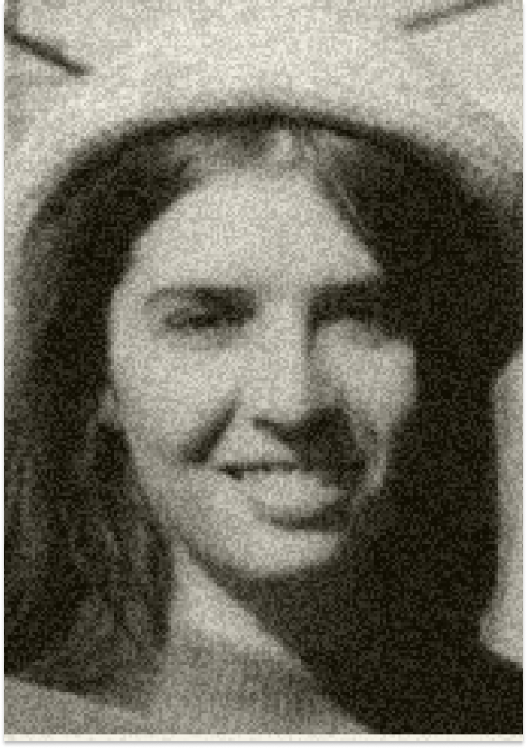
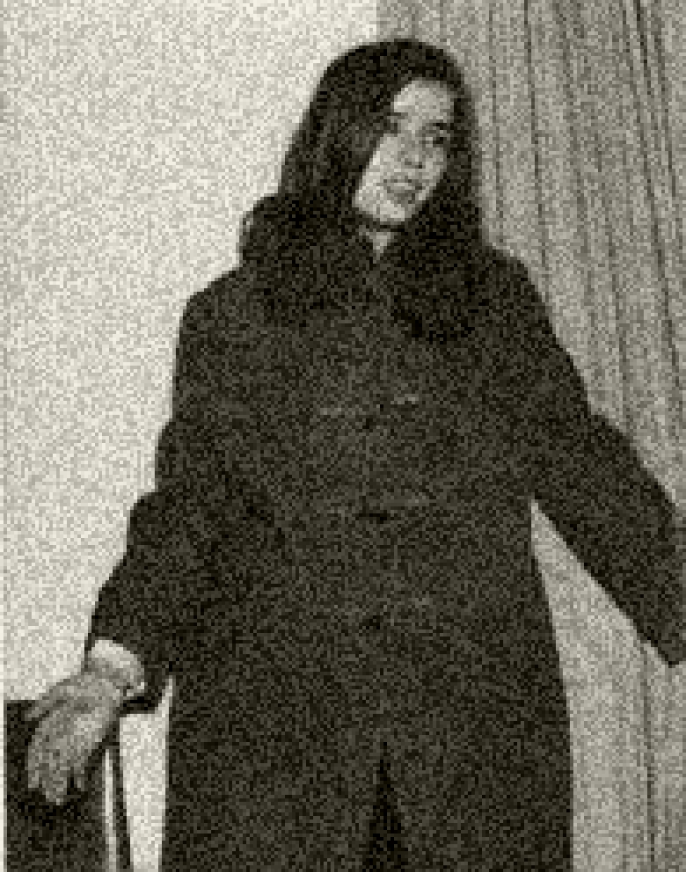
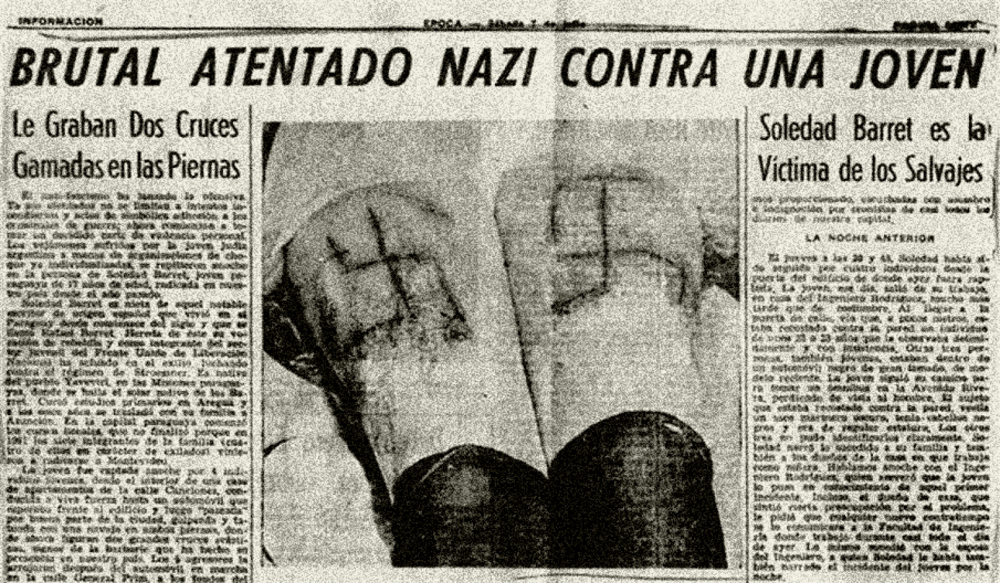
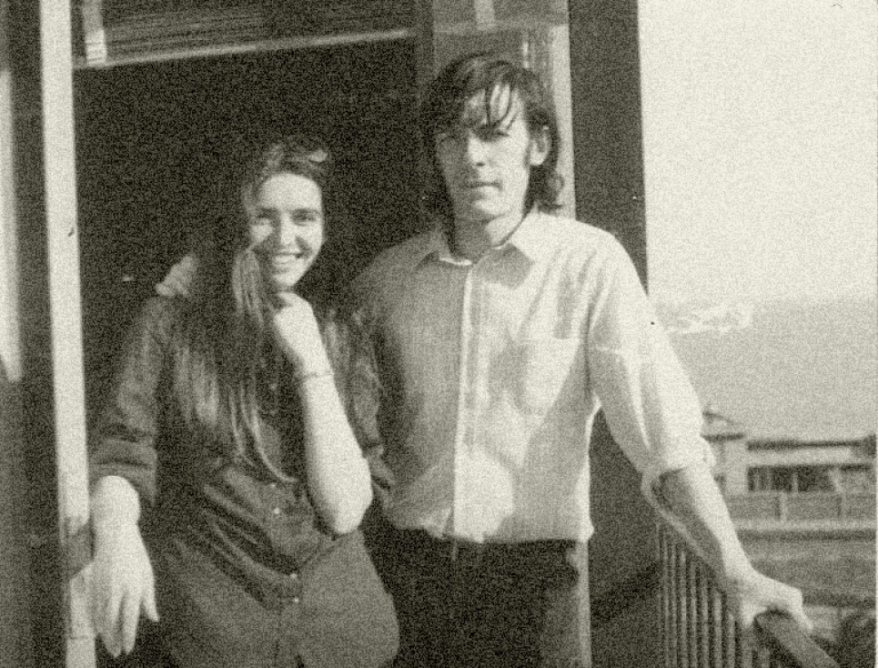

Foto de Soledad disponível no Arquivo Nacional
SOLEDAD
BARRETT
VIEDMA
Soledad nasceu no Paraguai e teve a sua vida muito
conturbada desde criança, uma vez que seus pais (Deolinda Viedma Ortiz e
Alex Rafael Barrett) e seu avô (Rafael
Barrett) eram militantes de esquerda e constantemente tinham que mudar de país por questões de
segurança.
Em razão das perseguições sofridas, a família fugiu do Paraguai para a Argentina
quando Soledad tinha apenas três meses de idade, e lá permaneceu por quatro anos.
Regressaram então para o Paraguai, mas voltaram a se exilar, dessa vez no Uruguai, para escapar da ditadura de Stroessner.
Desde a adolescência, Soledad militava no movimento estudantil e se dedicava a atividades artísticas como dançarina folclórica.
Enquanto vivia em Montevidéu, em 1962, com 17 anos, Soledad foi raptada por um grupo neonazista que tentou obrigá-la a gritar palavras de ordem em exaltação a Hitler e contrárias à Revolução Cubana. Como Soledad resistiu, gravaram em sua pele uma cruz gamada.

Foto de Soledad disponível no Arquivo Nacional

Reportagem do Jornal Época de 1962
A partir de então, Soledad passou a ser perseguida e resolveu seguir para Cuba onde recebeu treinamento de guerrilha e conheceu José Maria de Araújo, militante da Vanguarda Popular Revolucionária (VPR) que tinha sido banido do Brasil por ter participado da mobilização dos marinheiros quando era um jovem oficial.
Soledad e José Maria se casaram e tiveram uma filha, a quem deram o nome de Ñasaindy de Araújo Barrett.
Em 1970, José Maria retornou ao Brasil para atuar na resistência contra a ditadura e, um ano depois, veio Soledad. Quando chegou ao país, descobriu que José Maria tinha sido morto no DOI-CODI/SP.

Foto de Soledad com o seu companheiro, José Maria de Araújo.
Soledad se estabeleceu em Pernambuco no contexto de reorganização da VPR no Nordeste e passou a ter um relacionamento afetivo com o “Cabo Anselmo”, com quem vivia em Rio Doce.
Soledad foi uma das vítimas do episódio conhecido como Massacre da Chácara São Bento, em operação articulada a partir da atuação do “Cabo Anselmo” como agente infiltrado.
Suspeita-se que, quando foi morta, Soledad esperava um filho de Anselmo.
Os principais agentes mencionados no caso são:
Sérgio Paranhos Fleury, comandou a operação que capturou e matou sob tortura militantes da VPR;
João Henrique de Carvalho, na condição de agente duplo, delatou os militantes e participou da operação de captura;
Carlos Alberto Augusto, participou da operação que capturou os militantes da VPR.
Soledad morreu durante o mandato de Emílio Garrastazu Médici.
Texto baseado no Terceiro Volume do Relatório Final da Comissão Nacional da Verdade (CNV).